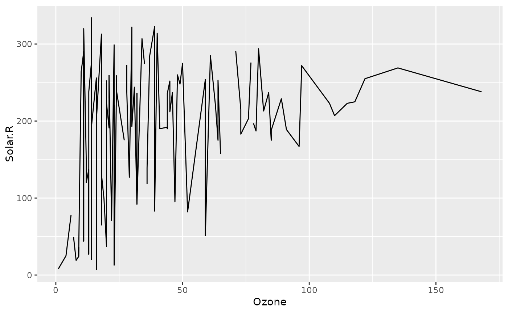

teal.reporter blocks overview
Source:vignettes/teal-reporter-blocks-overview.Rmd
teal-reporter-blocks-overview.RmdOverview of Content Blocks
This document serves as a comprehensive guide to the various types of
content blocks available in the teal.reporter. These blocks
allow users to structure and customize reports.
Table: Content Blocks in teal.reporter
The following table outlines the different blocks that can be
included in a ReportCard, along with descriptions and usage
examples:
| Block Type | Description | Usage Example |
|---|---|---|
ReportCard |
Combines various content blocks into a single card. | report_card <- ReportCard$new() |
ContentBlock |
Base class for content blocks, can include any type of content. | report_card$append_content(<ContentBlock>) |
TextBlock |
Adds text-based content to the report. | report_card$append_text(<text>) |
RcodeBlock |
Embeds R code directly into the report. | report_card$append_rcode(<code text>, echo = FALSE) |
NewpageBlock |
Marks a new page in the report for organization purposes. | report_card$append_content(<NewpageBlock>) |
FileBlock |
Manages file-based content, ensuring proper file handling. | report_card$append_content(<FileBlock>) |
TableBlock |
Holds and displays tabular data. | report_card$append_table(<table>) |
PictureBlock |
Contains graphical content from classes like ggplot,
grob, trellis, and Heatmap. |
report_card$append_plot(<plot>) |
These blocks form the building blocks of a ReportCard,
each serving a specific function that contributes to the overall layout
and content of the report. The ReportCard object utilizes
append_* methods to integrate various blocks such as
TextBlock, PictureBlock,
RcodeBlock, and TableBlock.
The following diagram illustrates the inheritance relationship between the different blocks:
%% This is a mermaid diagram, if you see this the plot failed to render. Sorry.
classDiagram
class ReportCard{
+append_content()
+append_text()
+append_table()
+append_plot()
+append_rcode()
+append_metadata()
}
ReportCard <.. FileBlock: utilizes
ReportCard <.. ContentBlock: utilizes
ReportCard <.. TextBlock: utilizes
ReportCard <.. NewpageBlock: utilizes
ReportCard <.. RcodeBlock: utilizes
ReportCard <.. PictureBlock: utilizes
ReportCard <.. TableBlock: utilizes
ContentBlock <|-- TextBlock
ContentBlock <|-- NewpageBlock
ContentBlock <|-- RcodeBlock
ContentBlock <|-- FileBlock
FileBlock <|-- PictureBlock
FileBlock <|-- TableBlock
namespace Blocks {
class ContentBlock
class FileBlock
class TextBlock
class NewpageBlock
class RcodeBlock
class PictureBlock
class TableBlock
}
style ContentBlock fill:lightpurple
style FileBlock fill: lightgreen
style TextBlock fill: pink
style NewpageBlock fill: pink
style RcodeBlock fill: pink
style PictureBlock fill: gold
style TableBlock fill:gold
style ReportCard fill:lightblue
Global knitr Options
To ensure consistency and control over the rendering of markdown
elements within reports, teal.reporter adheres to the following default
global knitr options:
To access the default values for the global_knitr
defaults include: * echo: displays the code along with its output
(echo = TRUE). * tidy: formats the R code for
readability using the formatR package if installed
(tidy = TRUE), otherwise set to FALSE. * width
cutoff: sets the maximum number of characters per line in the code
output (tidy.opts = list(width.cutoff = 60)).
You can access and modify these settings as follows:
library(teal.reporter)
getOption("teal.reporter.global_knitr")## $echo
## [1] TRUE
##
## $tidy.opts
## $tidy.opts$width.cutoff
## [1] 60
##
##
## $tidy
## [1] TRUEExample Report Using Multiple Content Blocks
Below is a complete example demonstrating how to create a report combining various content blocks:
library(ggplot2)
report_card <- ReportCard$new()
report_card$append_text("Header 2 text", "header2")
report_card$append_text("A paragraph of default text")
report_card$append_plot(
ggplot(airquality, aes(x = Ozone, y = Solar.R)) +
geom_line(na.rm = TRUE)
)
report_card$append_table(airquality)
report_card$append_rcode("airquality_new <- airquality", echo = FALSE)
report_card$append_metadata(key = "lm", value = lm(Ozone ~ Solar.R, airquality))
report_card$get_content()
## $d5859864
## [1] "## Header 2 text"
##
## $`74a9358e`
## [1] "A paragraph of default text"
##
## $`92f4d394`
##
## $ddf2708d
## Ozone Solar.R Wind Temp Month Day
## 1 41 190 7.4 67 5 1
## 2 36 118 8.0 72 5 2
## 3 12 149 12.6 74 5 3
## 4 18 313 11.5 62 5 4
## 5 NA NA 14.3 56 5 5
## 6 28 NA 14.9 66 5 6
## 7 23 299 8.6 65 5 7
## 8 19 99 13.8 59 5 8
## 9 8 19 20.1 61 5 9
## 10 NA 194 8.6 69 5 10
## 11 7 NA 6.9 74 5 11
## 12 16 256 9.7 69 5 12
## 13 11 290 9.2 66 5 13
## 14 14 274 10.9 68 5 14
## 15 18 65 13.2 58 5 15
## 16 14 334 11.5 64 5 16
## 17 34 307 12.0 66 5 17
## 18 6 78 18.4 57 5 18
## 19 30 322 11.5 68 5 19
## 20 11 44 9.7 62 5 20
## 21 1 8 9.7 59 5 21
## 22 11 320 16.6 73 5 22
## 23 4 25 9.7 61 5 23
## 24 32 92 12.0 61 5 24
## 25 NA 66 16.6 57 5 25
## 26 NA 266 14.9 58 5 26
## 27 NA NA 8.0 57 5 27
## 28 23 13 12.0 67 5 28
## 29 45 252 14.9 81 5 29
## 30 115 223 5.7 79 5 30
## 31 37 279 7.4 76 5 31
## 32 NA 286 8.6 78 6 1
## 33 NA 287 9.7 74 6 2
## 34 NA 242 16.1 67 6 3
## 35 NA 186 9.2 84 6 4
## 36 NA 220 8.6 85 6 5
## 37 NA 264 14.3 79 6 6
## 38 29 127 9.7 82 6 7
## 39 NA 273 6.9 87 6 8
## 40 71 291 13.8 90 6 9
## 41 39 323 11.5 87 6 10
## 42 NA 259 10.9 93 6 11
## 43 NA 250 9.2 92 6 12
## 44 23 148 8.0 82 6 13
## 45 NA 332 13.8 80 6 14
## 46 NA 322 11.5 79 6 15
## 47 21 191 14.9 77 6 16
## 48 37 284 20.7 72 6 17
## 49 20 37 9.2 65 6 18
## 50 12 120 11.5 73 6 19
## 51 13 137 10.3 76 6 20
## 52 NA 150 6.3 77 6 21
## 53 NA 59 1.7 76 6 22
## 54 NA 91 4.6 76 6 23
## 55 NA 250 6.3 76 6 24
## 56 NA 135 8.0 75 6 25
## 57 NA 127 8.0 78 6 26
## 58 NA 47 10.3 73 6 27
## 59 NA 98 11.5 80 6 28
## 60 NA 31 14.9 77 6 29
## 61 NA 138 8.0 83 6 30
## 62 135 269 4.1 84 7 1
## 63 49 248 9.2 85 7 2
## 64 32 236 9.2 81 7 3
## 65 NA 101 10.9 84 7 4
## 66 64 175 4.6 83 7 5
## 67 40 314 10.9 83 7 6
## 68 77 276 5.1 88 7 7
## 69 97 267 6.3 92 7 8
## 70 97 272 5.7 92 7 9
## 71 85 175 7.4 89 7 10
## 72 NA 139 8.6 82 7 11
## 73 10 264 14.3 73 7 12
## 74 27 175 14.9 81 7 13
## 75 NA 291 14.9 91 7 14
## 76 7 48 14.3 80 7 15
## 77 48 260 6.9 81 7 16
## 78 35 274 10.3 82 7 17
## 79 61 285 6.3 84 7 18
## 80 79 187 5.1 87 7 19
## 81 63 220 11.5 85 7 20
## 82 16 7 6.9 74 7 21
## 83 NA 258 9.7 81 7 22
## 84 NA 295 11.5 82 7 23
## 85 80 294 8.6 86 7 24
## 86 108 223 8.0 85 7 25
## 87 20 81 8.6 82 7 26
## 88 52 82 12.0 86 7 27
## 89 82 213 7.4 88 7 28
## 90 50 275 7.4 86 7 29
## 91 64 253 7.4 83 7 30
## 92 59 254 9.2 81 7 31
## 93 39 83 6.9 81 8 1
## 94 9 24 13.8 81 8 2
## 95 16 77 7.4 82 8 3
## 96 78 NA 6.9 86 8 4
## 97 35 NA 7.4 85 8 5
## 98 66 NA 4.6 87 8 6
## 99 122 255 4.0 89 8 7
## 100 89 229 10.3 90 8 8
## 101 110 207 8.0 90 8 9
## 102 NA 222 8.6 92 8 10
## 103 NA 137 11.5 86 8 11
## 104 44 192 11.5 86 8 12
## 105 28 273 11.5 82 8 13
## 106 65 157 9.7 80 8 14
## 107 NA 64 11.5 79 8 15
## 108 22 71 10.3 77 8 16
## 109 59 51 6.3 79 8 17
## 110 23 115 7.4 76 8 18
## 111 31 244 10.9 78 8 19
## 112 44 190 10.3 78 8 20
## 113 21 259 15.5 77 8 21
## 114 9 36 14.3 72 8 22
## 115 NA 255 12.6 75 8 23
## 116 45 212 9.7 79 8 24
## 117 168 238 3.4 81 8 25
## 118 73 215 8.0 86 8 26
## 119 NA 153 5.7 88 8 27
## 120 76 203 9.7 97 8 28
## 121 118 225 2.3 94 8 29
## 122 84 237 6.3 96 8 30
## 123 85 188 6.3 94 8 31
## 124 96 167 6.9 91 9 1
## 125 78 197 5.1 92 9 2
## 126 73 183 2.8 93 9 3
## 127 91 189 4.6 93 9 4
## 128 47 95 7.4 87 9 5
## 129 32 92 15.5 84 9 6
## 130 20 252 10.9 80 9 7
## 131 23 220 10.3 78 9 8
## 132 21 230 10.9 75 9 9
## 133 24 259 9.7 73 9 10
## 134 44 236 14.9 81 9 11
## 135 21 259 15.5 76 9 12
## 136 28 238 6.3 77 9 13
## 137 9 24 10.9 71 9 14
## 138 13 112 11.5 71 9 15
## 139 46 237 6.9 78 9 16
## 140 18 224 13.8 67 9 17
## 141 13 27 10.3 76 9 18
## 142 24 238 10.3 68 9 19
## 143 16 201 8.0 82 9 20
## 144 13 238 12.6 64 9 21
## 145 23 14 9.2 71 9 22
## 146 36 139 10.3 81 9 23
## 147 7 49 10.3 69 9 24
## 148 14 20 16.6 63 9 25
## 149 30 193 6.9 70 9 26
## 150 NA 145 13.2 77 9 27
## 151 14 191 14.3 75 9 28
## 152 18 131 8.0 76 9 29
## 153 20 223 11.5 68 9 30
##
## $`120de345`
## [1] "airquality_new <- airquality"
## attr(,"params")
## attr(,"params")$echo
## [1] FALSE
##
## attr(,"lang")
## [1] "R"
## attr(,"class")
## [1] "code_chunk"
##
## attr(,"class")
## [1] "teal_card"
## attr(,"metadata")
## attr(,"metadata")$lm
##
## Call:
## lm(formula = Ozone ~ Solar.R, data = airquality)
##
## Coefficients:
## (Intercept) Solar.R
## 18.5987 0.1272